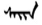
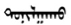
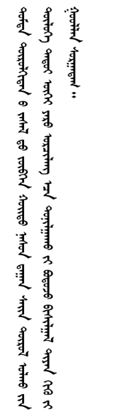
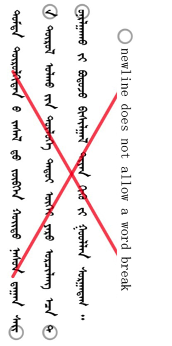
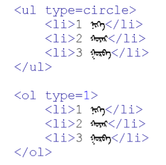
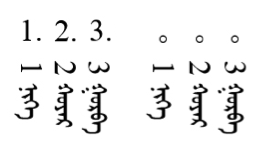
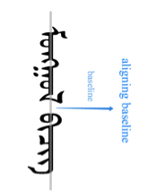
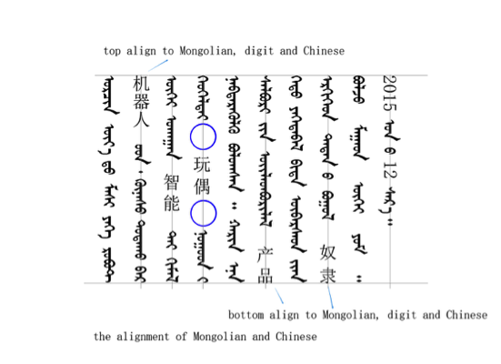

Lines and Paragraphs
Line breaking
Line-breaking should not split words. shows correct line-breaking, without breaking the Mongolian words. shows incorrect line-breaking for “” and “”.


Text alignment
Text alignment includes "left alignment", "horizontal centering", and “right alignment ”, as well as “top alignment”, “vertical centering”, “bottom alignment”and “top-bottom alignment”.
"Left alignment ", "horizontal centering" and “right alignment” are the alignment rules that apply inside a line. “Top alignment”, “horizontal centering”, “bottom alignment” and “top-bottom alignment” are the alignment rules in a page or a paragraph of a multi-line text.
Among "left alignment", "horizontal centering" and “right alignment”, “horizontal centering” is a default option which means that the Mongolian text will align based on its baseline axis. “Left alignment” means that the text will move left a certain distance, which shows obvious differences compared with the text after setting “horizontal center”. “Right alignment” means that the text will move right a certain distance after, which shows obvious differences compared with the text after setting “horizontal center”.
Among “Top alignment”, “vertical center”, “bottom alignment” and “top-bottom alignment”, “top-bottom alignment” is a default option which means that the words in the upper and the lower boundary of a multi-line text in a paragraph or a page are all aligned. Its alignment method is that spaces in the text are stretched in the same proportion. “Top alignment” means that the words in the upper boundary of a multi-line text in a paragraph or a page are all aligned without considering the alignment of the lower boundary and stretching the space between words. “Vertical center” means the words in the upper and the lower boundary of a multi-line text in a paragraph or a page do not need to align and leave the same blank under the condition of no-stretching space between words.
Counters, lists, etc
The display of these controls needs to pay attention to the direction of the output. That is to say, the primary display of the number 1, 2, 3, etc. is from left to right. The effect of the following code is as shown in . Note how the text is centered on the vertical midline. The separator dots for the numbering are not centre-aligned. We should probably mention that. Also, shouldn't the numbers be rotated counter-clockwise?


Baselines
Mongolian is aligned to a baseline that runs down the center of the writing, and all text is aligned to this baseline as shown in :

Mixed Arrangement Rules with Other Languages
When mixed with other languages, the text in those languages should also be centre-aligned along the Mongolian baseline.
Mixed Arrangement Rules with Numbers and Latin
There is no obvious midcourt line in numbers and Latin. Therefore generally, half of the text height is regarded as a midcourt line position. When Mongolian script is mixed with numbers and Latin, the line of half of the text height should be aligned with Mongolian midcourt line. When font size of numbers is the same as Mongolian’s, it will be slightly larger, so some handling methods should be taken to avoid the problem, such as the methods listed in .

Mixed Arrangement Rules with Chinese and Japanese
For mixed arrangements with Chinese or Japanese, note the following:
- Chinese and Japanese cannot be displayed in on their side. They must be displayed upright, as in horizontal Chinese or Japanese.
- The center line of Chinese or Japanese text (the width in this case) needs to be aligned with the centre baseline of the Mongolian text.
- Pay attention to the top alignment and bottom alignment of the Mongolian text. In the same line, the mixed display of Mongolian and Chinese needs attention to produce a balanced alignment. When displayed, it should stretch space, but empty distance or space should not be added in Chinese text. Does this mean that no inter-character spacing should be applied to the Chinese?
- Mongolian is smaller than Chinese or Japanese in the same font size, so some handling methods should be taken to avoid the problem, such as methods listed in .
